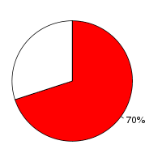

Human (Homo sapiens, GRCh37) and Marmoset (Callithrix jacchus, C_jacchus3.2.1) were aligned using the LastZ alignment algorithm (LastZ) in Ensembl release 66. Human was used as the reference species. After running LastZ , the raw LastZ alignment blocks are chained according to their location in both genomes. During the final netting process, the best sub-chain is chosen in each region on the reference species.
Full list of pairwise alignments| Gap open penalty (O) | 400 | ||||||||||||||||||||
| Gap extend penalty (E) | 30 | ||||||||||||||||||||
| HSP threshold (K) | 5000 | ||||||||||||||||||||
| Threshold for gapped extension (L) | 5000 | ||||||||||||||||||||
| Threshold for alignments between gapped alignment blocks (H) | 3000 | ||||||||||||||||||||
| Masking count (M) | 10 | ||||||||||||||||||||
| Seed and Transition value (T) | 1 | ||||||||||||||||||||
| Scoring matrix (Q) |
|
Number of alignment blocks: 1419752
| Genome coverage(bp) | Coding exon coverage (bp) | |
|---|---|---|
| Human |
|
|
| 2,139,093,306 out of 3,098,825,702 | 33,878,006 out of 35,155,918 | |
| Marmoset |  |
|
| 2,044,784,192 out of 2,914,958,544 | 31,559,150 out of 33,607,040 |